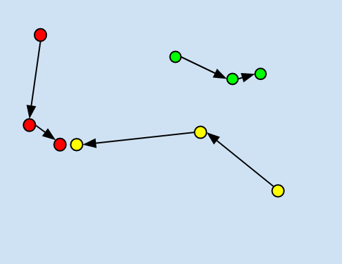
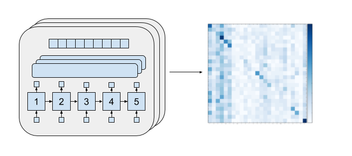
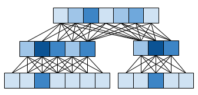
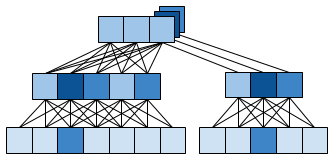

|  | The goal of this project is to develop a representation of the "ideology" of communities. We begin with the notion that a given message produced in a particular social space is determined by two key factors: the topics, ideas, and values present in that text; and the ideology and norms of the venue of communication. My goal is to explore ways of modeling, learning, or extracting a representation of the venue using just text. Hopefully these representations will allow us to make judgments about which communities are similar in their ideological tendencies, and which communities are different. And, if we examine language data that was produced over time, we can describe how community ideology changes over time. |
|
The first architecture to experiment with for this project is a language-model based architecture. We fine-tune state of the art language models to each of the N communities. Then we compare each of the N language models with each of the N communities. We generate confusion matrices for tha language of each community, as well as joint perplexity scores. We then use these measures to generate reduced-dimensionality representations for the spatial "landscape" of community language. |
 |
|  | |
|  | |